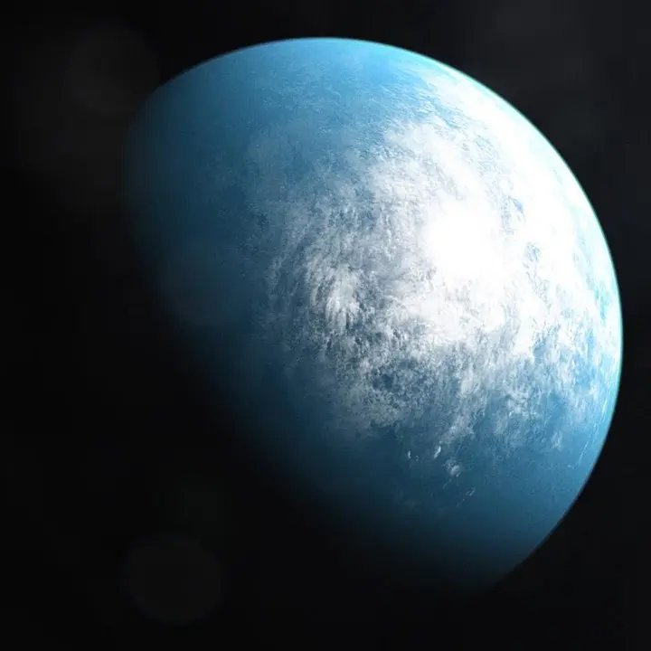

TOI 700 d — Exoplaneta

Introdução e História
TOI 700 d é um exoplaneta rochoso do tipo super-Terra que orbita uma estrela anã vermelha chamada TOI 700, localizada a cerca de 101,4 anos-luz da Terra na constelação de Dorado.
Ele foi descoberto em janeiro de 2020 pelo satélite Transiting Exoplanet Survey Satellite (TESS) da NASA, sendo o primeiro planeta de tamanho semelhante ao da Terra localizado na zona habitável de sua estrela, a região em que, teoricamente, água líquida poderia existir na superfície.
Características Físicas: Massa, Tamanho e Órbita
TOI 700 d possui um raio estimado em cerca de 1,19 vezes o da Terra, indicando uma composição possivelmente rochosa e sólida.
Ele orbita sua estrela em aproximadamente 37,4 dias terrestres a uma distância de cerca de 0,161 unidades astronômicas, recebendo cerca de 86% da energia que a Terra recebe do Sol.
Embora a massa exata seja ainda incerta, estudos sugerem que ela pode ser comparável à da Terra, reforçando sua semelhança com planetas rochosos.
Potencial de Habitabilidade
- 💧 Zona Habitável: Está localizado na zona habitável da sua estrela.
- ☀️ Energia Estelar: Recebe uma quantidade de energia semelhante à da Terra.
- ⚠️ Atmosfera Desconhecida: Ainda não há observações diretas confirmadas da atmosfera.
Esses fatores fazem de TOI 700 d um dos exoplanetas mais interessantes para estudo em termos de habitabilidade fora do Sistema Solar.
Curiosidades
TOI 700 d foi o primeiro planeta do tamanho da Terra encontrado na zona habitável pela missão TESS.
O sistema TOI 700 possui outros planetas, mas apenas TOI 700 d está na zona habitável.
Modelos indicam que ele pode estar gravitacionalmente travado, afetando seu clima.
Origem do Nome
O nome TOI 700 d segue a convenção científica: TOI 700 identifica a estrela hospedeira e a letra d indica a ordem de descoberta do planeta no sistema.
Referências
- Wikipedia. TOI-700 d. Disponível em: https://pt.wikipedia.org/wiki/TOI-700_d . Acesso em: 26 dez. 2025.
- NASA Exoplanet Catalog. TOI-700 d. Disponível em: https://science.nasa.gov/exoplanet-catalog/toi-700-d/ . Acesso em: 26 dez. 2025.